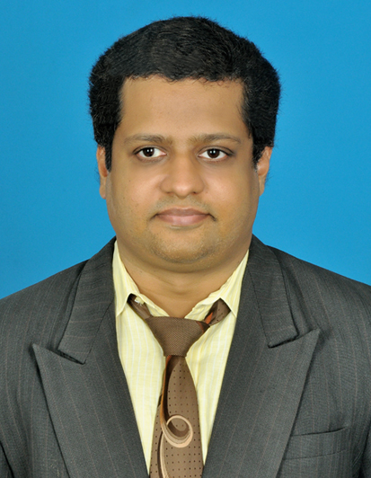

About
B.E.S.T.
Bharath's Engineering Solutions and Technology.

Founder & Technical Lead
Bharath Swaminathan
Ph.D. Aerospace Engineering from IIT Madras, with a background spanning engineering research, finite element analysis, scientific computing, programming, AI evaluation and technical automation.
The résumé documents experience with Abaqus, ANSYS, MATLAB, Mathematica, Python, C/C++, FORTRAN and other computational tools, along with published research in dynamic soaring and flight dynamics.
B.E.S.T. is designed as a broad engineering + AI + education consultancy for companies seeking to outsource specialized technical work, while also serving students through its tutoring offering.
Work with B.E.S.T. →